Relatório de Critérios de Aceite — US-DIAG-03 · Condições do integrante: educação, renda e saúde
Resumo
Os 13 critérios de aceite da US-DIAG-03 foram verificados: 1 exclusivamente no navegador, 11 de forma combinada (navegador + payload real da API / trilha de auditoria / suíte Pest / varredura de schema) e 1 exclusivamente automatizado (isolamento entre organizações, que a massa de dados não permite encenar — todas as famílias do ambiente pertencem a uma só organização). Nenhum critério ficou em falta e nenhum defeito foi encontrado. Os quatro pontos mais sensíveis da história foram provados com dado real do banco: a escolaridade sugerida pelo CadÚnico apareceu como DERIVADA sem nada ter sido gravado (payload com data: null e is_derived: true) e só virou valor depois do ato humano de confirmar, com schooling_source = derived_cadunico (CA02); a correção posterior mudou a origem para manual e a trilha guardou os valores antes/depois (CA11); renda 0,00 foi salva como valor e saiu da pendência, enquanto o campo esvaziado voltou a pendência (CA05); e o integrante com os seis campos vazios recebeu atendimento E encaminhamento sem qualquer bloqueio (CA10). A gestação anotada para a adolescente de 16 anos entrou no predicado real do PerfilGravidez do leiaute 15.7 (CA07). A suíte automatizada fechou 66 testes verdes / 434 asserções.
| CA | Critério | Status |
|---|---|---|
| CA01 | Registrar as condições de um integrante (happy path) | ATENDIDO · navegador + automatizado |
| CA02 | Escolaridade sugerida pelo CadÚnico | ATENDIDO · navegador + automatizado |
| CA03 | Grau sem correspondência não sugere nada | ATENDIDO · navegador + automatizado |
| CA04 | Renda exclui programas sociais | ATENDIDO · navegador |
| CA05 | Renda zero é diferente de renda vazia | ATENDIDO · navegador + automatizado |
| CA06 | Tipo de deficiência só quando há deficiência | ATENDIDO · navegador + automatizado |
| CA07 | Registrar gestação | ATENDIDO · navegador + automatizado |
| CA08 | Evasão não é perguntada | ATENDIDO · navegador + automatizado |
| CA09 | Ausência não vira negativa | ATENDIDO · navegador + automatizado |
| CA10 | Campos vazios não impedem atendimento | ATENDIDO · navegador + automatizado |
| CA11 | Correção auditada | ATENDIDO · navegador + automatizado |
| CA12 | Negativa declara o motivo | ATENDIDO · navegador + automatizado |
| CA13 | Isolamento entre municípios | ATENDIDO · automatizado |
CA01 — Registrar as condições de um integrante (happy path) ATENDIDO · navegador + automatizado
Critério (Gherkin): Dado que sou Operacional do Tenant com o add-on LGPD e a família Silva tem cinco integrantes Quando eu registrar, para a integrante Maria, own_income = 1200.00, is_literate = true, escolaridade "ensino médio", situação escolar "não, já frequentou" e has_serious_illness = false Então os valores são salvos E constam na composição familiar com meu nome e a data
Como foi testado: Prontuário da família E2E Família No CRAS → aba Composição Familiar → botão Condições na linha do responsável familiar. No drawer: renda 1.200,00, Alfabetizado = Sim, Escolaridade = 4 — Ensino médio, Situação escolar = 3 — Não, já frequentou, Doença grave = Não → Salvar condições. Os dois selects foram abertos para conferir que as listas são as do Manual do SIAP (9 níveis de escolaridade, 5 situações escolares) e não vêm do frontend.
- Os seis campos foram salvos: payload devolve own_income "1200.00", is_literate true, schooling_level 4 — Ensino médio, school_situation 3 — Não, já frequentou, has_serious_illness false.
- O aviso de pendência do leiaute 15.10 desapareceu — missing_fields: [] e is_pending: false.
- O drawer passa a exibir a assinatura "Registrado por E2E Operador Prontuário em 17/09/2026"; o payload traz created_by e updated_by com o usuário da sessão e os respectivos timestamps.
- A escolaridade informada à mão registrou schooling_source = manual (não derivado) e schooling_confirmed_at preenchido.
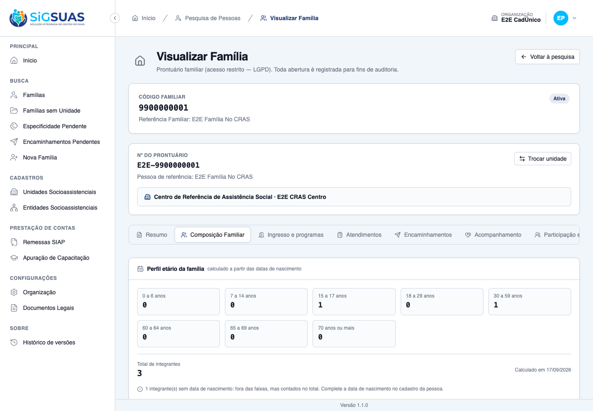
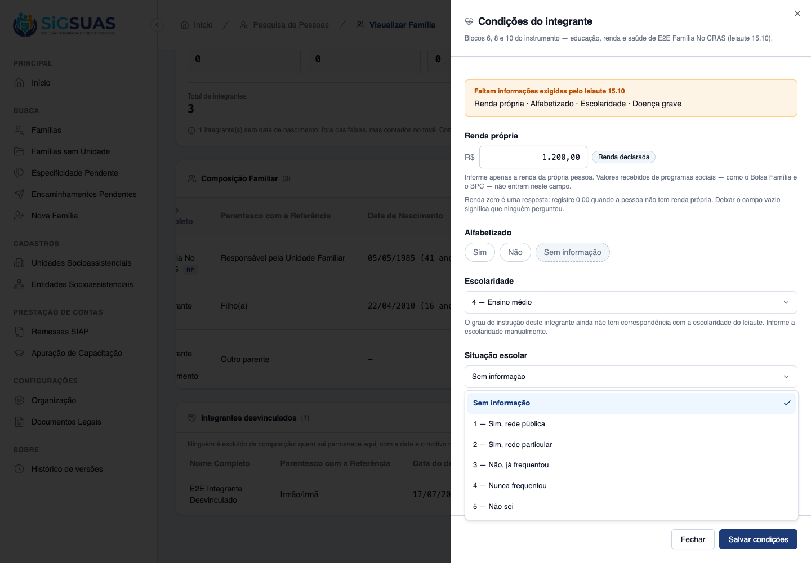
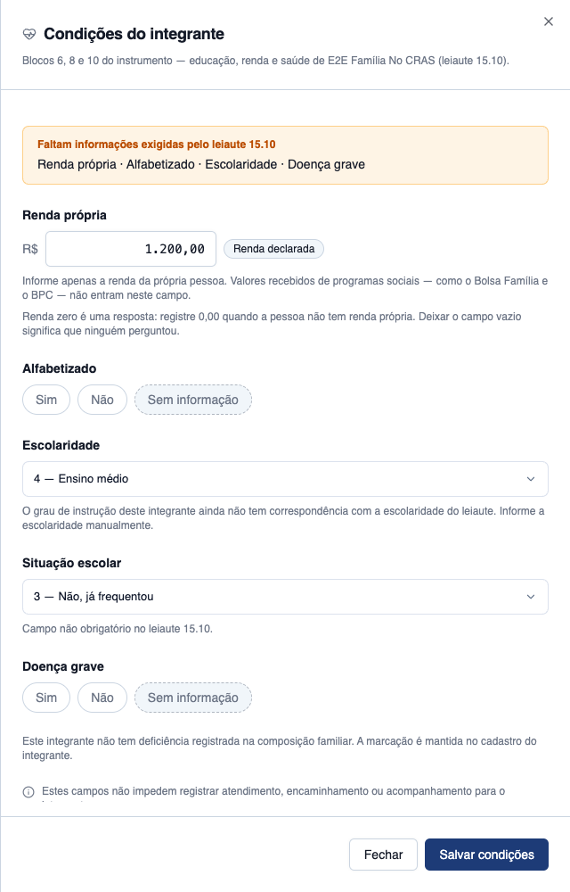
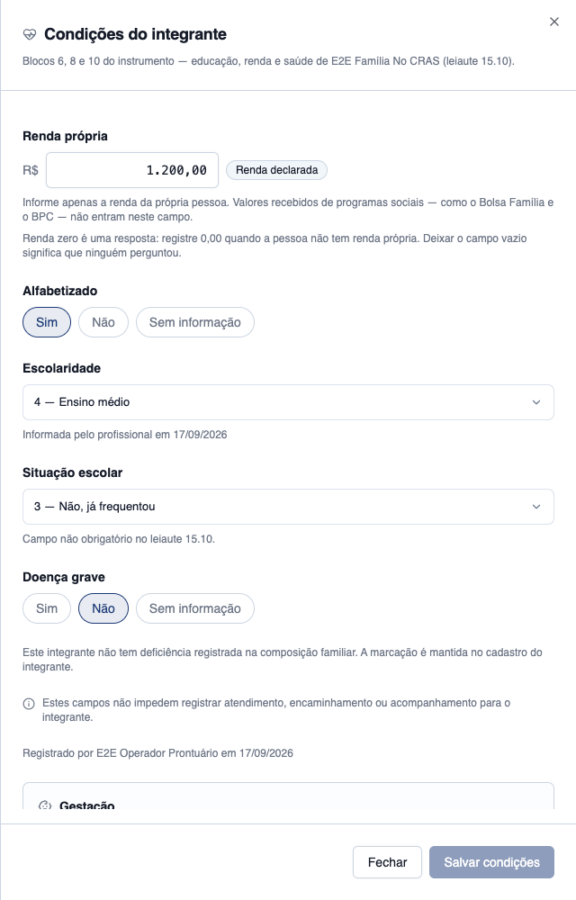
CA02 — Escolaridade sugerida pelo CadÚnico ATENDIDO · navegador + automatizado
Critério (Gherkin): Dado que o integrante Pedro foi importado com education_level_id preenchido E que esse grau tem schooling_level_id definido no Painel Global Quando eu abrir as condições dele Então o payload traz schooling_level_suggested com is_derived = true e schooling_level_id = null E ao confirmar, schooling_level_id recebe o sugerido, schooling_source = derived_cadunico e schooling_confirmed_at é preenchido
Como foi testado: O integrante E2E Integrante Local foi posto com grau de instrução do CadÚnico 2 — Fundamental incompleto, cujo de-para no Painel Global aponta para a escolaridade 2 — Alfabetizado (ver o preparo de massa nas observações). Abri as condições dele, li o payload ANTES de qualquer clique, e só então usei Confirmar escolaridade.
- Antes de qualquer ato humano o payload traz data: null — nenhuma linha nasceu por dedução — e schooling_level_suggested com is_derived: true.
- A tela mostra "Escolaridade sugerida: Alfabetizado" com o selo "Derivado do CadÚnico" e o texto "Ela ainda não está registrada: confirme ou corrija para que passe a valer"; o select permanece em "Sem informação" e "Escolaridade" segue na lista de pendências.
- Depois de confirmar: schooling_level = 2 — Alfabetizado, schooling_source = "derived_cadunico", schooling_confirmed_at = 2026-09-17T21:38:39Z; o selo dá lugar a "Confirmada a partir do CadÚnico em 17/09/2026".
- A confirmação usou o MESMO PUT das condições — não existe endpoint separado de confirmação.
CA03 — Grau sem correspondência não sugere nada ATENDIDO · navegador + automatizado
Critério (Gherkin): Dado que o grau de instrução do integrante tem schooling_level_id NULL Quando eu abrir as condições dele Então schooling_level_suggested vem null E nenhum nível foi atribuído por suposição
Como foi testado: O grau 6 — Superior incompleto ou mais teve o de-para zerado (schooling_level_id = NULL) e foi atribuído ao integrante E2E Integrante Sem Nascimento. Abri as condições dele e li o payload.
- schooling_level_suggested vem null: nenhum painel de sugestão, nenhum selo, nenhum valor no select.
- A tela declara o motivo — "O grau de instrução deste integrante ainda não tem correspondência com a escolaridade do leiaute. Informe a escolaridade manualmente." — em vez de oferecer "o mais próximo".
- Nenhuma linha foi criada ao abrir a tela; a escolaridade continuou contando como em falta no 15.10.
- A suíte Unit do resolver cobre as três formas de ausência (grau órfão, grau sem de-para e grau inexistente) e prova que os níveis 6 a 9 são inalcançáveis pelo de-para atual (achado A1).
CA04 — Renda exclui programas sociais ATENDIDO · navegador
Critério (Gherkin): Dado que estou registrando a renda de um integrante que recebe Bolsa Família Quando eu abrir o campo de renda Então a tela indica que valores recebidos de programas sociais não entram nesse campo
Como foi testado: Abri o campo Renda própria de um integrante e li o texto de apoio exibido logo abaixo dele.
- A tela diz, literalmente: "Informe apenas a renda da própria pessoa. Valores recebidos de programas sociais — como o Bolsa Família e o BPC — não entram neste campo."
- O texto é de apoio à declaração: o sistema não tem como verificar a origem do valor e não impõe validação nenhuma sobre isso (D12) — se o entendimento do TCE-AL for outro, muda o texto, não o schema.
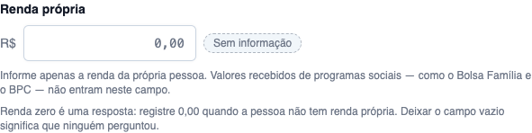
CA05 — Renda zero é diferente de renda vazia ATENDIDO · navegador + automatizado
Critério (Gherkin): Dado que o integrante Pedro não tem renda própria Quando eu registrar own_income = 0 Então o valor é salvo como 0.00 E a US-DIAG-05 NÃO o conta como incompleto E deixar o campo vazio (NULL) continua gerando pendência
Como foi testado: No mesmo integrante: registrei 0,00 e salvei; depois apaguei o campo e salvei outra vez. Li o payload nas duas situações.
- Com zero: own_income = "0.00" (valor declarado) e o campo sai da lista de pendências — missing_fields traz apenas is_literate, schooling_level e has_serious_illness. A tela marca "Renda declarada".
- Com o campo apagado: own_income = null e own_income VOLTA para missing_fields; a tela marca "Sem informação" e o aviso do leiaute lista "Renda própria" de novo.
- A própria tela explica a diferença: "Renda zero é uma resposta: registre 0,00 quando a pessoa não tem renda própria. Deixar o campo vazio significa que ninguém perguntou."
- Nenhum '?? 0' no caminho: a suíte de isolamento assere que NULL permanece NULL e ZERO permanece ZERO atravessando o escopo de tenant.
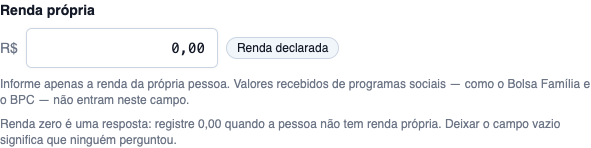
CA06 — Tipo de deficiência só quando há deficiência ATENDIDO · navegador + automatizado
Critério (Gherkin): Dado que o integrante Pedro tem has_disability = true Quando eu abrir as condições dele Então o campo de tipo de deficiência é oferecido, com as dez opções E para integrante com has_disability = false o campo não aparece E enviar disability_type_uuid para ele responde 422 (disability_type_not_applicable)
Como foi testado: Comparei dois integrantes da mesma família: um com a marcação de deficiência na composição (E2E Integrante Sem Nascimento) e outro sem ela (E2E Integrante Local). Depois enviei disability_type_uuid (5 — Deficiência física) por PUT para o integrante sem a marcação, na sessão autenticada do navegador.
- Com a marcação: o select "Tipo de deficiência" aparece com as dez opções literais do Manual — 1 Cegueira, 2 Baixa visão, 3 Surdez severa ou profunda, 4 Surdez leve ou moderada, 5 Deficiência física, 6 Deficiência mental ou intelectual, 7 Síndrome de Down, 8 Deficiência múltipla, 9 Transtorno do espectro autista, 10 Outros.
- Sem a marcação: o select NÃO EXISTE na tela — no lugar dele a explicação "Este integrante não tem deficiência registrada na composição familiar. A marcação é mantida no cadastro do integrante."
- O PUT com disability_type_uuid para esse integrante respondeu 422 com a mensagem da chave disability_type_not_applicable: "O tipo de deficiência só pode ser informado para integrante com deficiência registrada na composição familiar."
- A marcação de deficiência nunca é ligada por este payload — ela continua vindo da composição familiar / CadÚnico.
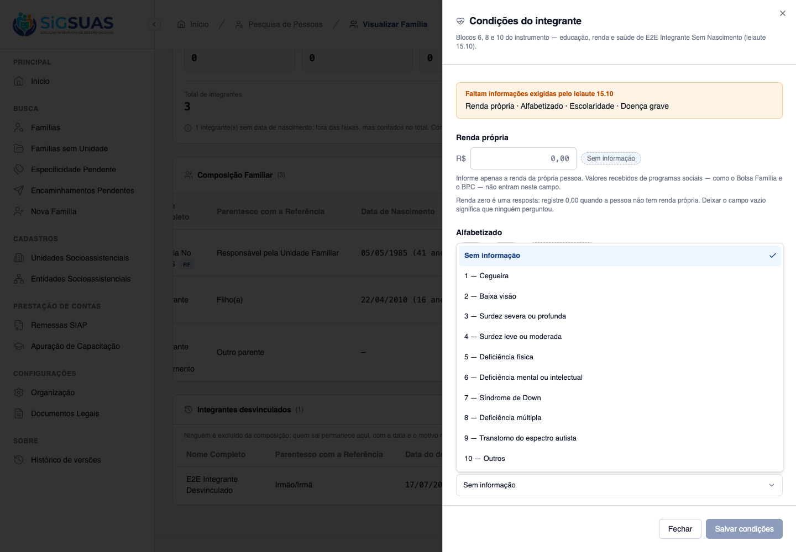
CA07 — Registrar gestação ATENDIDO · navegador + automatizado
Critério (Gherkin): Dado que a integrante Ana, de 16 anos, está gestante Quando eu registrar a gestação Então uma linha em family_member_pregnancies é criada com recorded_on E ela passa a compor o perfil de gravidez na adolescência do leiaute 15.7
Como foi testado: A integrante E2E Integrante Local nasceu em 22/04/2010 — 16 anos na data da anotação. No bloco Gestação do drawer registrei a anotação de 17/09/2026 com observação. Depois rodei o predicado real do perfil do 15.7 (FollowUpReportService::teenPregnancyFamilyIds, consulta Q7g) sobre setembro/2026.
- Uma linha foi criada em family_member_pregnancies com recorded_on = 2026-09-17, autor user #14 e deleted_at NULL.
- O histórico passa a listar "17/09/2026 por E2E Operador Prontuário" com a observação; existe "Remover", e NÃO existe "Editar" — corrigir a data é remover e anotar de novo, e a tela diz isso.
- O predicado do PerfilGravidez devolveu a família #1: idade na data da anotação = 16 anos, menor de 18 — a anotação entra no perfil do leiaute 15.7.
- Do bloco 10 entrou apenas a existência da gestação: a tela declara que meses de gestação, início do pré-natal e unidade básica de referência não são coletados.
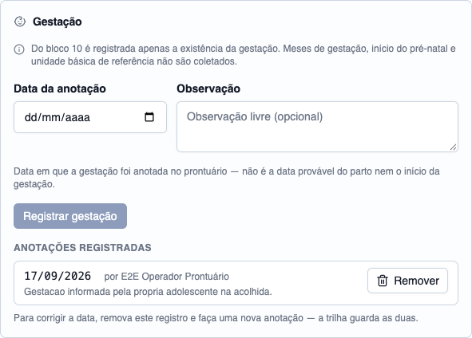
CA08 — Evasão não é perguntada ATENDIDO · navegador + automatizado
Critério (Gherkin): Quando eu percorrer os campos das condições de um adolescente Então não existe campo perguntando se ele está em evasão escolar E nenhuma coluna, enum ou chave de payload com esse nome existe no sistema
Como foi testado: Este critério se prova pela ausência. Percorri o drawer inteiro do integrante e, no backend, listei as colunas das duas tabelas da HU, varri app/, database/ e routes/ por "evasão"/"dropout" e contei as rotas com esse nome.
- O drawer tem sete campos — renda própria, alfabetizado, escolaridade, situação escolar, doença grave, tipo de deficiência e gestação — e nenhum pergunta sobre evasão escolar.
- family_member_conditions e family_member_pregnancies não têm coluna alguma de evasão.
- Zero rotas com evasão/dropout. Os únicos acertos da varredura são o perfil DERIVADO do leiaute 15.7 (calculado na apuração da US-DIAG-05 a partir dos códigos 3 e 4 de school_situations) e comentários que declaram justamente que o campo não existe.
- A situação escolar é coletada porque o leiaute 15.10 a pede; a evasão é conclusão do sistema, nunca pergunta ao profissional.
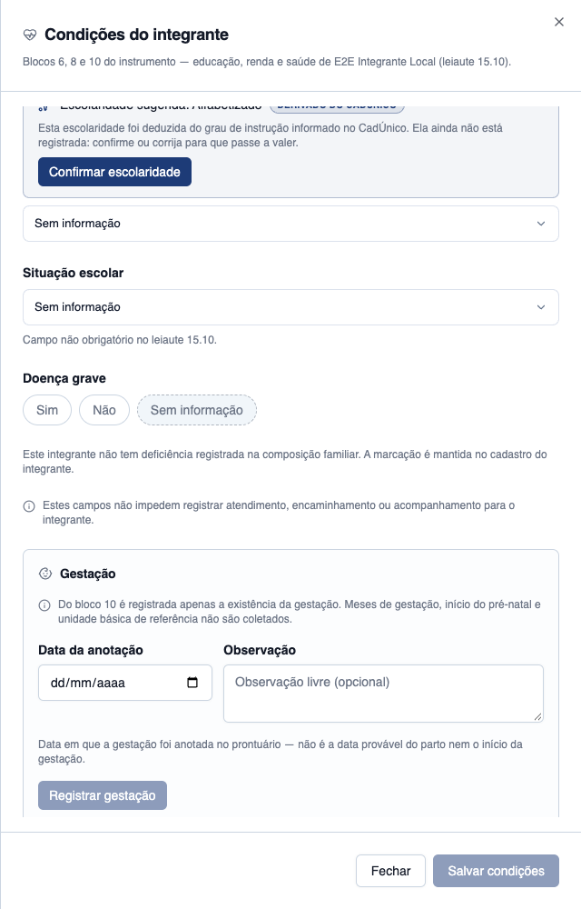
CA09 — Ausência não vira negativa ATENDIDO · navegador + automatizado
Critério (Gherkin): Dado que o integrante João nunca teve as condições registradas Quando eu consultar a composição familiar Então os seis campos vêm null E nenhum é apresentado como "não"
Como foi testado: Abri as condições de um integrante sem nenhum registro e conferi o estado dos dois campos de sim/não, dos selects e do campo de renda. Depois li o payload da composição inteira (GET /families/{uuid}/conditions), que devolve uma entrada por integrante.
- Os dois campos de três estados (Alfabetizado e Doença grave) vêm com "Sem informação" marcado — "Não" fica explicitamente desmarcado.
- Renda aparece vazia com o rótulo "Sem informação" (não 0,00); os três selects vêm em "Sem informação".
- No payload da composição, integrante sem registro devolve data: null e is_pending: true — nada é inventado como false.
- Onde há linha com os seis campos em branco, todos vêm null (own_income, is_literate, schooling_level, school_situation, has_serious_illness e disability_type) e os quatro obrigatórios do 15.10 saem em missing_fields.
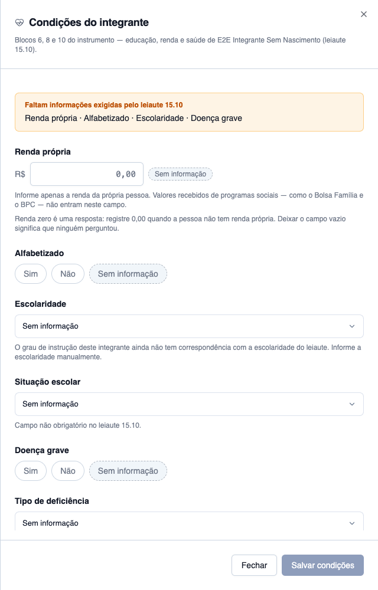
CA10 — Campos vazios não impedem atendimento ATENDIDO · navegador + automatizado
Critério (Gherkin): Dado que o integrante João está com os seis campos vazios Quando eu registrar um atendimento ou um encaminhamento para ele Então a ação é permitida normalmente — nenhuma verificação nova foi acrescentada
Como foi testado: Com o integrante E2E Integrante Sem Nascimento de fato com os seis campos NULL (conferido no banco), registrei para ele um atendimento (aba Atendimentos → Registrar atendimento, tipo 1 — Atendimento socioassistencial individualizado) e um encaminhamento (aba Encaminhamentos → código 40 — Educação).
- O atendimento foi registrado normalmente e aparece no histórico: 17/09/2026 · Atendimento socioassistencial individualizado · E2E Integrante Sem Nascimento · E2E CRAS Centro · Registrado.
- O encaminhamento também: 17/09/2026 · 40 — Educação · Escola Municipal E2E · Registrado · Aguardando retorno.
- Nenhum aviso, nenhuma confirmação extra, nenhum bloqueio — as condições em branco não foram sequer mencionadas pelos dois fluxos.
- A própria tela das condições declara a regra: "Estes campos não impedem registrar atendimento, encaminhamento ou acompanhamento para o integrante."
- No banco: integrante #3 com os seis campos NULL, 1 atendimento e 1 encaminhamento na família. A suíte cobre o mesmo par de ações, e nenhum arquivo das Actions de atendimento/encaminhamento foi tocado por esta HU.
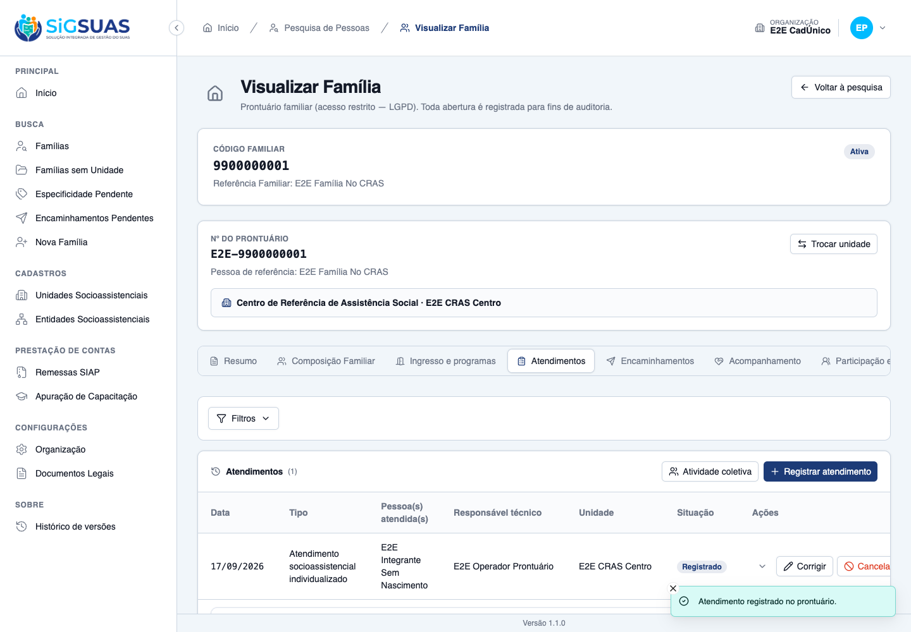
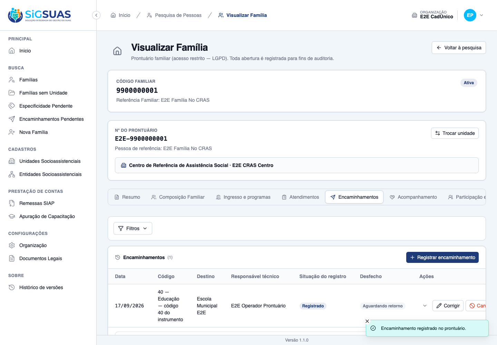
CA11 — Correção auditada ATENDIDO · navegador + automatizado
Critério (Gherkin): Dado que registrei a escolaridade errada Quando eu corrigi-la Então a correção é salva com schooling_source = manual E o activity_log registra autor, data e os valores antes/depois
Como foi testado: Peguei o caso mais forte: a escolaridade que estava confirmada a partir do CadÚnico (schooling_source = derived_cadunico) no integrante E2E Integrante Local e a corrigi para 3 — Fundamental. Depois li a trilha de auditoria das duas tabelas da HU.
- A tela deixa de dizer "Confirmada a partir do CadÚnico" e passa a dizer "Informada pelo profissional em 17/09/2026".
- A activity #3161 (evento updated) registra autor E2E Operador Prontuário (user #14), data 2026-09-17 21:43:09 e os valores antes/depois: schooling_level_id 2 → 3 e schooling_source derived_cadunico → manual.
- A trilha guarda também a criação das duas linhas e a atualização do CA01, sempre com autor e timestamp; a anotação de gestação também é logada (log_name family_member_pregnancy).
- Não existe cancelamento nem status nesta tabela: o estado vigente se corrige, e a versão anterior vive no activity_log.

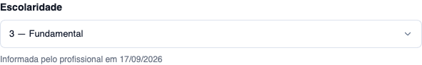
CA12 — Negativa declara o motivo ATENDIDO · navegador + automatizado
Critério (Gherkin): Dado que sou Operacional lotado apenas no "CRAS Rural" E que a família Silva é referenciada no "CRAS Centro" e acompanhada pelo "CREAS" Quando eu tentar registrar as condições de um integrante dela Então recebo 403 com reason = unit_not_assigned, sem nomear as unidades
Como foi testado: O Operacional da sessão tem lotação vigente em E2E CRAS Centro e E2E CRAS Sem MDS. A família #2 é referenciada no E2E CREAS — fora da lotação dele. Abri o prontuário dela na tela e, em seguida, exercitei os três verbos das condições e da gestação na sessão autenticada.
- A tela devolve o painel "Acesso restrito" com a mensagem do backend e o convite a procurar o gestor Master.
- PUT das condições, GET das condições e POST da gestação responderam 403 com error_code = "unit_not_assigned" — o código estável é o único identificador do motivo.
- A mensagem NÃO nomeia nenhuma unidade: não diz "CRAS Centro" nem "CREAS". Ela declara o motivo sem revelar onde a família é atendida.
- O gate é o ponto único FamilyAccessService::familyAccessOutcome() — os três eixos (add-on LGPD, profissional ativo com lotação vigente, unidade de referência ou de acompanhamento); nenhuma permissão nova foi criada por esta HU.

CA13 — Isolamento entre municípios ATENDIDO · automatizado
Critério (Gherkin): Dado que sou usuário do município A Quando eu acessar condições de integrante de família do município B Então recebo 404
Como foi testado: Este critério é regra de backend e a massa disponível não permite encenar na tela: todas as 12 famílias do ambiente pertencem a uma única organização, então não existe família "do município B" para abrir. Na sessão do navegador registrei a resposta a um uuid fora do escopo da organização ativa, e a prova do cruzamento real está na suíte tests/Feature/TenantIsolation/FamilyMemberConditionIsolationTest.php.
- Família fora do escopo da organização ativa responde 404 "Registro não encontrado" — nunca 403: a resposta não confirma nem nega a existência da família.
- A suíte de isolamento (8 testes) prova o cruzamento de verdade: as duas tabelas usam a trait BelongsToTenant, a condição e a gestação de outra organização são inalcançáveis pelos três verbos, e nem as Actions chegam à linha alheia.
- Ela cobre ainda dois pontos que o navegador não alcança: a gestação de outro município fica fora do perfil do 15.7, e o escopo é no-op fora do ciclo HTTP — que é exatamente por que a trait, e não o middleware, é o que protege a linha.
- Os três lookups do 15.10 (escolaridade, situação escolar, tipo de deficiência) permanecem GLOBAIS, sem tenant_id — e há teste assegurando isso.
Evidência por cobertura automatizada — ver Anexo.
Observações e ressalvas
Preparo de massa declarado — e o que foi desfeito depois
A base semeada não tinha nenhum integrante com grau de instrução do CadÚnico, nem marcação de deficiência, nem integrante em família de outra unidade. Quatro ajustes foram feitos diretamente no banco, por SQL, sem passar pela aplicação (portanto fora da trilha de auditoria da HU) para que os critérios pudessem ser exercidos:
- CA02 — o integrante E2E Integrante Local recebeu
education_level_id = 2(Fundamental incompleto), grau cujo de-para aponta para a escolaridade2 — Alfabetizado. - CA03 — o de-para do grau
6 — Superior incompleto ou maisfoi zerado (schooling_level_id = NULL) e atribuído ao integrante E2E Integrante Sem Nascimento. O de-para foi restaurado ao fim da captura — os seis graus voltaram ao estado que o dossiê da US-DIAG-01 fotografou. - CA06 — o mesmo integrante recebeu
has_disability = truena composição, porque nenhum integrante do ambiente tinha a marcação. - CA12 — a família #2 (referenciada no E2E CREAS) não tinha integrante nenhum, e sem um deles a rota de escrita não chega ao gate de acesso (o binding aninhado resolve antes e devolve 404). Um integrante foi criado nela só para que o 403 pudesse ser exercido no verbo de escrita, como o critério pede.
Nada mais foi alterado: os registros de condições, gestação, atendimento e encaminhamento deste dossiê foram todos criados pela aplicação, na sessão do Operacional.
Onde moram os valores antes/depois na trilha de auditoria
No spatie/laravel-activitylog 5.0.0 — a versão instalada — os valores antes/depois de um modelo com LogsActivity são gravados na coluna activity_log.attribute_changes. A coluna properties guarda apenas o que é gravado manualmente; nas linhas desta HU ela traz só o tenant_id que o Model App\Models\Activity injeta para escopar a trilha.
Isso vale para todos os 57 log_name do ambiente, não só para esta HU. Fica registrado aqui porque quem for conferir a trilha olhando somente properties vai concluir, erradamente, que a auditoria não guarda os valores — ela guarda, e o arquivo activity-log-ca11.txt mostra as duas colunas lado a lado.
§8.4 da spec — o volume de confirmação pendente foi medido, mas não neste ambiente é que ele importa
A Definição de Pronto exige rodar a consulta da §8.4 (achado A2) antes do merge: quantos integrantes ativos têm grau de instrução do CadÚnico e ainda estão sem escolaridade confirmada. A consulta foi executada contra o PostgreSQL real do ambiente, organização por organização, e está em consulta-8-4-volume-pendente.txt.
Resultado: 1 integrante — e esse número não diz nada sobre a operação. O ambiente inteiro tem 9 integrantes ativos, dos quais 2 com grau de instrução importado. A medição precisa ser repetida contra a base de um município real antes do merge, porque é dela que depende a decisão de negócio por trás do achado A2: se a confirmação integrante por integrante de toda a base importada é exequível, ou se o PO precisa de outro caminho.
Limites da massa — o perfil do 15.7 e a conferência agregada não puderam ser exercidos na tela
O CA07 diz que a gestação "passa a compor o perfil de gravidez na adolescência do leiaute 15.7". Esse perfil é contado por unidade e mês, sobre as famílias que ingressaram em acompanhamento no período — e a base semeada não tem nenhum acompanhamento (family_follow_ups vazia em todas as organizações). A tela de apuração sairia com zeros, o que não provaria nada; além disso ela exige a permissão attendance-reports.view, que o Operacional usado neste dossiê não tem.
No lugar dela rodei o predicado real que alimenta o perfil — FollowUpReportService::teenPregnancyFamilyIds(), a consulta Q7g da §8.3 — sobre setembro/2026, e ele devolveu a família da anotação. É a prova de que a anotação satisfaz a regra; a contagem agregada por unidade é evidência da US-DIAG-05.
Divergências de redação a levar ao PO
- CA06 — "responde 422 (disability_type_not_applicable)". A resposta é 422 e a mensagem vem da chave
disability_type_not_applicable, mas o corpo é o de erro de validação do Laravel (message+errors.disability_type_uuid) e não traz um campoerror_code— diferente do 403 do CA12, que traz. Se o critério espera um código estável no payload também no 422, isso é mudança de contrato a decidir. - CA01/CA09 nomeiam pessoas ("Maria", "João", "Pedro", "Ana") e uma família com cinco integrantes. O ambiente de evidência tem outros nomes e três integrantes vigentes na família usada; a substância de cada critério foi exercida integralmente, com o papel correspondente.
Achado de tela: "sem grau de instrução" e "grau sem de-para" dizem a mesma coisa
Observado ao vivo durante a captura, no integrante E2E Família No CRAS, que não tem grau de instrução nenhum no CadÚnico: a tela exibe o mesmo texto do outro caso — "O grau de instrução deste integrante ainda não tem correspondência com a escolaridade do leiaute". O payload devolve schooling_level_suggested: null nas duas situações, e não há como a tela distingui-las.
É fiel ao CA03 (nada é sugerido, nada é atribuído por suposição) e não bloqueia nada — mas o texto pode soar impreciso para quem nunca teve grau importado. Separar os dois casos exigiria um campo novo no Resource, ou seja, mudança de contrato: fica registrado como achado, não como defeito desta HU.
Ambiente: a porta da API divergia da configuração do frontend
Mesma condição já registrada no dossiê da US-DIAG-02. A API do Sail responde em http://localhost (porta 80), mas o client/ está configurado para http://localhost:8000 — porta sem nada escutando; o sintoma é o login responder 200 e a chamada seguinte falhar. Como a instrução veda alterar a configuração do projeto, encaminhei a porta 8000 para a 80 com um proxy TCP temporário, encerrado no fim da captura.
A captura usou o build de produção do client servido em :4174, e não o dev server, porque SANCTUM_STATEFUL_DOMAINS no ambiente lista apenas localhost:4173 e localhost:4174 — em qualquer outra porta o Sanctum recusa a sessão. O build foi refeito a partir do commit bebf1c0 antes da captura.
Anexo — Cobertura automatizada (Pest 4) — FamilyMemberConditionTest + SuggestSchoolingLevelResolverTest + FamilyMemberConditionIsolationTest
PASS Tests\Feature\Api\Client\FamilyMemberConditionTest ✓ it records income, literacy, schooling, school situation and seriou… 0.65s ✓ it suggests the schooling level derived from the CadUnico grade WIT… 0.09s ✓ it turns the suggestion into a value only when a human confirms it,… 0.09s ✓ it marks the schooling as manual when the professional corrects the… 0.09s ✓ it records as manual a level that the lossy de-para could never sug… 0.09s ✓ it suggests nothing when the CadUnico grade has no schooling level… 0.09s ✓ it suggests nothing for a member with no CadUnico grade at all (CA0… 0.09s ✓ it keeps the schooling as MANUAL when there is no suggestion to con… 0.09s ✓ it states in the lang that social program benefits do not count as… 0.08s ✓ it accepts the income of a PBF beneficiary without any cross-check… 0.09s ✓ it saves own_income = 0 as 0.00 and does NOT count it as missing (C… 0.09s ✓ it keeps an empty income as a pending field, never as zero (CA05/D0… 0.09s ✓ it restores an income to "no information" when null is sent explici… 0.10s ✓ it refuses a negative income and an income with three decimals (§10… 0.10s ✓ it offers the ten disability types to a member with has_disability… 0.10s ✓ it answers 422 disability_type_not_applicable for a member without… 0.09s ✓ it never turns has_disability on because a type was informed (D06) 0.09s ✓ it records a pregnancy with the annotation date (CA07/RN08) 0.09s ✓ it keeps every annotation — the second NEVER overwrites the first (… 0.10s ✓ it refuses an annotation dated in the future (§10) 0.09s ✓ it removes a wrong annotation with soft delete, recording who remov… 0.10s ✓ it keeps a removed annotation OUT of the history and of the 15.7 ap… 0.11s ✓ it keeps a removed condition row OUT of the family listing (regress… 0.11s ✓ it answers 404 for an annotation of another member — scoped binding… 0.09s ✓ it has NO column, NO enum and NO payload key for school dropout (CA… 0.10s ✓ it returns data null and is_pending true for a member never recorde… 0.09s ✓ it returns the six fields as null — never as false — in the payload… 0.09s ✓ it reads the string "false" as false, not as true (§10) 0.09s ✓ it refuses an unrecognizable answer instead of silently erasing the… 0.09s ✓ it registers an attendance and a referral for a member with the six… 0.13s ✓ it corrects the record in place and audits the change with author a… 0.10s ✓ it audits the eight value fields — own_income included — and nothin… 0.09s ✓ it audits the pregnancy annotation WITHOUT its notes (§14) 0.09s ✓ it answers 403 with unit_not_assigned, naming no unit, to an operat… 0.10s ✓ it answers 403 to an operator without the LGPD add-on (CA12) 0.09s ✓ it answers 404 — never 403 — for a member of a family from another… 0.10s ✓ it answers 404 for a member of ANOTHER family of the same municipal… 0.09s ✓ it answers 405 to POST and DELETE on conditions, and to PUT on a pr… 0.09s ✓ it leaves out-of-payload fields untouched and clears one only when… 0.10s ✓ it keeps ONE row per member however many times it is saved (RN01) 0.10s ✓ it refuses a lookup value outside the Manual domains (§10) 0.09s ✓ it refuses authorship sent by the client (RN11) 0.09s ✓ it lists the conditions of the whole family in one call, with the p… 0.10s PASS Tests\Unit\Family\SuggestSchoolingLevelResolverTest ✓ it traduz o grau do CadUnico no nivel do 15.10, linha a linha do de… 0.04s ✓ it traduz o grau do CadUnico no nivel do 15.10, linha a linha do de… 0.02s ✓ it traduz o grau do CadUnico no nivel do 15.10, linha a linha do de… 0.02s ✓ it traduz o grau do CadUnico no nivel do 15.10, linha a linha do de… 0.02s ✓ it traduz o grau do CadUnico no nivel do 15.10, linha a linha do de… 0.02s ✓ it traduz o grau do CadUnico no nivel do 15.10, linha a linha do de… 0.02s ✓ it cobre os seis graus do CadUnico e nenhum a mais (§8.1 — sanidade… 0.02s ✓ it nao sugere NADA quando o grau nao tem de-para — jamais "o mais p… 0.03s ✓ it nao sugere nada para o integrante que nao tem grau de instrucao… 0.02s ✓ it nao sugere nada quando o grau referenciado nem existe mais (CA03… 0.02s ✓ it nunca sugere pos-graduacao, mestrado, doutorado ou pos-doutorado… 0.02s ✓ it nao grava nada ao sugerir — nem uma linha vazia (D02) 0.02s ✓ it resolve o lote com a MESMA resposta do individual, e sem N+1 (§7… 0.02s ✓ it resolve o lote vazio sem consultar grau nenhum (§7.1) 0.02s ✓ it continua traduzindo o grau que foi excluido do cadastro depois d… 0.02s PASS Tests\Feature\TenantIsolation\FamilyMemberConditionIsolationTest ✓ it applies BelongsToTenant to FamilyMemberCondition and FamilyMembe… 0.04s ✓ it makes the condition and the pregnancy of another municipality un… 0.04s ✓ it keeps NULL as NULL and ZERO as ZERO across the tenant scope (RN0… 0.04s ✓ it keeps the pregnancy of another municipality out of the 15.7 prof… 0.04s ✓ it keeps the scope a NO-OP outside the HTTP cycle — which is why th… 0.04s ✓ it never lets the Actions reach the row of another municipality (RN… 0.04s ✓ it keeps the soft delete alive when the Action drops the tenant sco… 0.04s ✓ it keeps the three 15.10 lookups GLOBAL — without BelongsToTenant,… 0.04s Tests: 66 passed (434 assertions) Duration: 5.38s